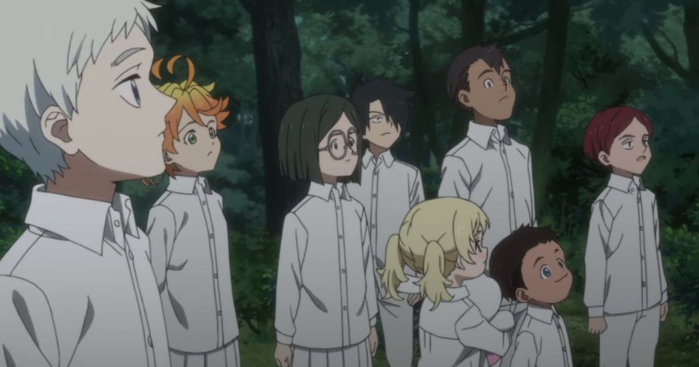

"The Promised Neverland (約束のネバーランド, Yakusoku no Nebārando?) est un manga écrit par Kaiu Shirai et dessiné par Posuka Demizu, prépublié entre août 2016 et juin 20201 dans le magazine Weekly Shōnen Jump de l'éditeur Shūeisha. La version française est publiée par Kazé à partir d'avril 2018.
Une adaptation en anime est diffusée pour la première fois entre le 11 janvier et le 29 mars 2019 au Japon sur Fuji TV dans la case horaire noitaminA ; la série est diffusée en streaming sur Wakanim et Anime Digital Network dans les territoires francophones. Une seconde saison est prévue pour janvier 20216. Une adaptation en film live-action est prévue pour décembre 2020"
Source"Emma et ses frères et sœurs, tous orphelins, ont été placés dans un établissement spécialisé lorsqu'ils étaient tout jeunes. Bien que leur liberté soit limitée et que les règles soient parfois un peu strictes, les enfants mènent une vie heureuse à Grace Field House, et la femme nommé « Maman » qui s'occupe d'eux et leur offre tout l'amour qu'une mère pourrait offrir à ses enfants. Mais un soir, après le départ d'une des leurs, Emma et Norman découvrent que les enfants de cet orphelinat sont livrés à des démons, avec le consentement de « Maman ». Pour survivre, ils devront faire preuve d'ingéniosité et tenter de s'échapper."
Source 